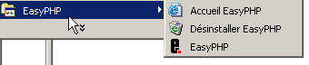
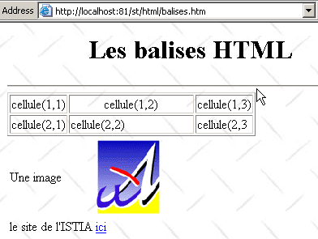

10. الملاحق - أدوات تطوير الويب
نوضح هنا أين يمكن العثور على أدوات مجانية لتطوير الويب بلغة Java و PHP و ASP و ASP.NET وكيفية تثبيتها. تم تحديث بعض الأدوات، وقد لا تنطبق الإرشادات الواردة هنا على أحدث الإصدارات. سيحتاج القراء إلى التكيف وفقًا لذلك... :
- متصفح حديث قادر على عرض XML. تم اختبار الأمثلة الواردة في هذه الدورة التدريبية باستخدام Internet Explorer 6.
- JDK (مجموعة أدوات تطوير Java) حديثة. تتضمن JDK المكون الإضافي للمتصفح Java 1.4، الذي يسمح للمتصفحات بعرض تطبيقات Java الصغيرة باستخدام JDK 1.4.
- بيئة تطوير Java لكتابة برامج Java الصغيرة. هنا، نستخدم JBuilder 7.
- خوادم الويب: Apache، PWS (Personal Web Server، Cassini)، Tomcat.
- يمكن استخدام Apache لتطوير تطبيقات الويب بلغة PERL (Practical Extracting and Reporting Language) أو PHP (Personal Home Page)
- يمكن استخدام PWS لتطوير تطبيقات الويب بلغة ASP (صفحات الخادم النشطة) أو PHP على أنظمة تشغيل Windows. يدعم Cassini التطوير بلغة ASP.NET.
- يُستخدم Tomcat لتطوير تطبيقات الويب باستخدام برامج Java servlets أو JSP (Java Server Pages)
- نظام إدارة قواعد البيانات: MySQL
- EasyPHP: أداة تجمع بين خادم الويب Apache ولغة PHP ونظام إدارة قواعد البيانات MySQL
10.1. خوادم الويب والمتصفحات ولغات البرمجة النصية
- خوادم الويب الرئيسية
- Apache (Linux، Windows)
- خادم معلومات الإنترنت (IIS) (NT)، خادم الويب الشخصي (PWS) (Windows 9x)، Cassini (منصات .NET)
- المتصفحات الرئيسية
- إنترنت إكسبلورر (ويندوز)
- نتسكيب (لينكس، ويندوز)
- موزيلا (لينكس، ويندوز)
- أوبرا (لينكس، ويندوز)
- لغات البرمجة النصية من جانب الخادم
- VBScript (IIS، PWS)
- جافا سكريبت (IIS، PWS)
- بيرل (أباتشي، IIS، PWS)
- PHP (أباتشي، IIS، PWS)
- Java (Apache، Tomcat)
- لغات .NET
- لغات البرمجة النصية من جانب المتصفح
- VBScript (IE)
- JavaScript (IE، Netscape)
- PerlScript (IE)
- Java (IE، Netscape)
10.2. أين تجد الأدوات
http://www.netscape.com/ (رابط التنزيلات) | |
http://www.microsoft.com/windows/ie/default.asp | |
http://www.mozilla.org | |
http://www.php.net | |
http://www.activestate.com | |
http://msdn.microsoft.com/scripting (اتبع رابط Windows Script) | |
http://java.sun.com/ | |
http://www.apache.org/ | |
مضمنة في حزمة خيارات NT 4.0 لنظام التشغيل Windows 95 مضمن في قرص Windows 98 المضغوط http://www.microsoft.com/ntserver/nts/downloads/recommended/NT4OptPk/win95.asp | |
http://www.microsoft.com | |
http://jakarta.apache.org/tomcat/ | |
http://www.borland.com/jbuilder/ | |
http://www.easyphp.org/ | |
http://www.asp.net |
10.3. EasyPHP
هذا التطبيق مريح للغاية لأنه يضم ما يلي في حزمة واحدة:
- خادم الويب Apache
- مترجم PHP
- نظام إدارة قواعد البيانات MySQL (3.23.x)
- أداة إدارة MySQL: PhpMyAdmin
يبدو تطبيق التثبيت كما يلي:

تثبيت EasyPHP سهل للغاية، ويتم إنشاء بنية دليل في نظام الملفات:

ملف التطبيق القابل للتنفيذ | |
هيكل دليل خادم Apache | |
دليل قاعدة بيانات MySQL | |
هيكل دليل تطبيق phpMyAdmin | |
هيكل دليل PHP | |
جذر شجرة الدلائل لصفحات الويب التي يقدمها خادم Apache الخاص بـ EasyPHP | |
الدليل الذي يمكنك وضع نصوص CGI فيه لخادم Apache |
الميزة الرئيسية لـ EasyPHP هي أن التطبيق يأتي مهيأً مسبقًا. وبالتالي، فإن Apache و PHP و MySQL مهيأة بالفعل للعمل معًا. عند تشغيل EasyPHP عبر الاختصار الموجود في قائمة البرامج، يظهر رمز في الزاوية اليمنى السفلية من الشاشة.
 |
يجب أن تومض حرف "E" مع نقطة حمراء إذا كان خادم الويب Apache وقاعدة بيانات MySQL قيد التشغيل. يؤدي النقر بزر الماوس الأيمن عليه إلى فتح قائمة تحتوي على الخيارات التالية:

يتيح لك خيار الإدارة تكوين الإعدادات وإجراء اختبارات الوظائف:

10.3.1. تكوين مترجم PHP
يجب أن يسمح لك زر "معلومات PHP" بالتحقق من أن تركيبة Apache-PHP تعمل بشكل صحيح: يجب أن تظهر صفحة معلومات PHP:

يعرض زر "الملحقات" قائمة بملحقات PHP المثبتة. هذه هي في الواقع مكتبات وظائف.

تُظهر الشاشة أعلاه، على سبيل المثال، أن الوظائف المطلوبة لاستخدام قاعدة بيانات MySQL موجودة.
يعرض زر "الإعدادات" اسم المستخدم وكلمة المرور لمسؤول قاعدة بيانات MySQL.

يخرج استخدام قاعدة بيانات MySQL عن نطاق هذه النظرة العامة السريعة، ولكن من الواضح هنا أنه يجب تعيين كلمة مرور لمسؤول قاعدة البيانات.
10.3.2. إدارة Apache
لا تزال في صفحة إدارة EasyPHP، يتيح لك الرابط "الأسماء المستعارة الخاصة بك" تحديد الأسماء المستعارة المرتبطة بأحد الدلائل. وهذا يسمح لك بوضع صفحات الويب خارج دليل www في شجرة دلائل EasyPHP.

إذا أدخلت المعلومات التالية في الصفحة أعلاه:

ونقر على زر "التحقق من الصحة"، تتم إضافة الأسطر التالية إلى ملف <easyphp>\apache\conf\httpd.conf:
Alias /st/ "e:/data/serge/web/"
<Directory "e:/data/serge/web">
Options FollowSymLinks Indexes
AllowOverride None
Order deny,allow
allow from 127.0.0.1
deny from all
</Directory>
يشير <easyphp> إلى دليل تثبيت EasyPHP. وملف httpd.conf هو ملف تكوين خادم Apache. وبالتالي، يمكنك تحقيق النتيجة نفسها عن طريق تعديل هذا الملف مباشرةً. عادةً ما يطبق Apache التغييرات التي تُجرى على ملف httpd.conf على الفور. وإذا لم يحدث ذلك، فستحتاج إلى إيقاف الخادم وإعادة تشغيله باستخدام أيقونة EasyPHP:
لإنهاء مثالنا، يمكننا الآن وضع صفحات الويب في شجرة الدليل e:\data\serge\web:
وطلب هذه الصفحة باستخدام الاسم المستعار st:

في هذا المثال، تم تكوين خادم Apache ليعمل على المنفذ 81. المنفذ الافتراضي له هو 80. يتم التحكم في ذلك بواسطة السطر التالي في ملف httpd.conf الذي رأيناه سابقًا:
10.3.3. ملف تكوين Apache [htpd.conf]
عندما تريد ضبط Apache بدقة، عليك تعديل ملف التكوين httpd.conf يدويًا، الموجود هنا في المجلد <easyphp>\apache\conf:

فيما يلي بعض النقاط الرئيسية التي يجب ملاحظتها في ملف التكوين هذا:
| الدور |
يشير إلى المجلد الذي يحتوي على شجرة دليل Apache | |
يحدد المنفذ الذي سيستخدمه خادم الويب. عادةً ما يكون هذا المنفذ هو 80. من خلال تغيير هذا السطر، يمكنك تشغيل خادم الويب على منفذ مختلف | |
عنوان البريد الإلكتروني لمسؤول خادم Apache | |
اسم الجهاز الذي يعمل عليه خادم Apache | |
دليل تثبيت خادم Apache. عندما تظهر أسماء الملفات النسبية في ملف التكوين، فإنها تكون نسبية بالنسبة لهذا الدليل. | |
الدليل الجذري لشجرة صفحات الويب التي يقدمها الخادم. هنا، سيتوافق عنوان URL http://machine/rep1/fic1.html مع الملف E:\Program Files\EasyPHP\www\rep1\fic1.html | |
يحدد خصائص المجلد السابق | |
مجلد السجلات، وبالتالي <ServerRoot>\logs\error.log: E:\Program Files\EasyPHP\apache\logs\error.log. هذا هو الملف الذي يجب التحقق منه إذا وجدت أن خادم Apache لا يعمل. | |
E:\Program Files\EasyPHP\cgi-bin سيكون جذر شجرة الدليل حيث يمكنك وضع نصوص CGI. وبالتالي، فإن عنوان URL http://machine/cgi-bin/rep1/script1.pl سيكون عنوان URL لنص CGI E:\Program Files\EasyPHP\cgi-bin\rep1\script1.pl. | |
يحدد خصائص المجلد أعلاه | |
أسطر لتحميل الوحدات النمطية التي تسمح لـ Apache بالعمل مع PHP4. | |
يحدد امتدادات الملفات التي سيتم التعامل معها على أنها ملفات PHP |
10.3.4. إدارة MySQL باستخدام PhpMyAdmin
في صفحة إدارة EasyPHP، انقر فوق الزر PhpMyAdmin:

تعرض القائمة المنسدلة أسفل الصفحة الرئيسية قواعد البيانات الحالية. |  |
الرقم الموجود بين قوسين هو عدد الجداول. إذا حددت قاعدة بيانات، فسيتم عرض جداولها: |  |
تقدم صفحة الويب عددًا من العمليات على قاعدة البيانات:

إذا نقرت على رابط "عرض المستخدم":

لا يوجد سوى مستخدم واحد هنا: root، وهو مسؤول MySQL. من خلال النقر على رابط «تحرير»، يمكنك تغيير كلمة مروره، والتي هي فارغة حاليًا — وهي ممارسة غير موصى بها بالنسبة لمسؤول. لن نخوض في مزيد من التفاصيل حول PhpMyAdmin، حيث إنها أداة غنية بالميزات تتطلب عدة صفحات لتغطيتها بالكامل.
10.4. PHP
لقد رأينا كيفية الحصول على PHP من خلال تطبيق EasyPHP. للحصول على PHP مباشرةً، انتقل إلى الموقع الإلكتروني http://www.php.net. لا يقتصر استخدام PHP على الويب. يمكن استخدامه كلغة برمجة نصية على نظام Windows. أنشئ البرنامج النصي التالي واحفظه باسم date.php:
<?
// script php affichant l'heure
$maintenant=date("j/m/y, H:i:s",time());
echo "Nous sommes le $maintenant";
?>
في نافذة DOS، انتقل إلى الدليل الذي يحتوي على [date.php] وقم بتشغيله:
dos>"e:\program files\easyphp\php\php.exe" date.php
X-Powered-By: PHP/4.2.0
Content-type: text/html
Nous sommes le 18/07/02, 09:31:01
10.5. PERL
من الأفضل أن يكون Internet Explorer مثبتًا بالفعل. إذا كان موجودًا، فسيقوم Active Perl بتكوينه لقبول نصوص PERL في صفحات HTML، والتي سيتم تنفيذها بواسطة IE نفسه على جانب العميل. موقع Active Perl على الويب هو http://www.activestate.comA التثبيت، سيتم تثبيت PERL في دليل سنسميه <perl>. ويحتوي على بنية الدليل التالية:
DEISL1 ISU 32 403 23/06/00 17:16 DeIsL1.isu
BIN <REP> 23/06/00 17:15 bin
LIB <REP> 23/06/00 17:15 lib
HTML <REP> 23/06/00 17:15 html
EG <REP> 23/06/00 17:15 eg
SITE <REP> 23/06/00 17:15 site
HTMLHELP <REP> 28/06/00 18:37 htmlhelp
يوجد الملف القابل للتنفيذ perl.exe في <perl>\bin. Perl هي لغة برمجة تعمل على أنظمة Windows وUnix. كما أنها تُستخدم في برمجة الويب. دعونا نكتب أول برنامج نصي لنا:
# script PERL affichant l'heure
# modules
use strict;
# programme
my ($secondes,$minutes,$heure)=localtime(time);
print "Il est $heure:$minutes:$secondes\n";
احفظ هذا البرنامج النصي في ملف باسم heure.pl. افتح نافذة DOS، وانتقل إلى الدليل الذي يحتوي على البرنامج النصي، وقم بتشغيله:
10.6. VBScript، JavaScript، PerlScript
هذه لغات برمجة نصية لنظام Windows. يمكن تشغيلها في بيئات مختلفة مثل
- Windows Scripting Host للاستخدام المباشر في Windows، خاصة لكتابة نصوص برمجية لإدارة النظام
- Internet Explorer. ثم يتم استخدامها داخل صفحات HTML، مما يضيف مستوى من التفاعل لا يمكن تحقيقه باستخدام HTML وحده.
- Internet Information Server (IIS)، خادم الويب الخاص بـ Microsoft على NT/2000، وما يعادله، Personal Web Server (PWS)، على Win9x. في هذه الحالة، تُستخدم VBScript لبرمجة الويب من جانب الخادم، وهي تقنية تسمى ASP (Active Server Pages) من قبل Microsoft.
قم بتنزيل ملف التثبيت من عنوان URL: http://msdn.microsoft.com/scripting واتبع روابط Windows Script. يتم تثبيت ما يلي:
- حاوية Windows Scripting Host، التي تدعم لغات برمجة نصية متنوعة مثل VBScript و JavaScript، بالإضافة إلى لغات أخرى مثل PerlScript، المضمنة في Active Perl.
- مترجم VBScript
- مترجم JavaScript
دعونا نجري بعض الاختبارات السريعة. دعونا نبني برنامج VBScript التالي:
' a class
class personne
Dim nom
Dim age
End class
' creation of a person object
Set p1=new personne
With p1
.nom="dupont"
.age=18
End With
' display properties person p1
With p1
wscript.echo "nom=" & .nom
wscript.echo "age=" & .age
End With
يستخدم هذا البرنامج كائنات. لنسمه objects.vbs (يشير الامتداد .vbs إلى ملف VBScript). انتقل إلى الدليل الذي يوجد فيه وقم بتشغيله:
dos>cscript objets.vbs
Microsoft (R) Windows Script Host Version 5.6
Copyright (C) Microsoft Corporation 1996-2001. All rights reserved.
nom=dupont
age=18
الآن دعونا نبني برنامج JavaScript التالي الذي يستخدم المصفوفات:
// tableau dans un variant
// tableau vide
tableau=new Array();
affiche(tableau);
// tableau croît dynamiquement
for(i=0;i<3;i++){
tableau.push(i*10);
}
// affichage tableau
affiche(tableau);
// encore
for(i=3;i<6;i++){
tableau.push(i*10);
}
affiche(tableau);
// tableaux à plusieurs dimensions
WScript.echo("-----------------------------");
tableau2=new Array();
for(i=0;i<3;i++){
tableau2.push(new Array());
for(j=0;j<4;j++){
tableau2[i].push(i*10+j);
}//for j
}// for i
affiche2(tableau2);
// fin
WScript.quit(0);
// ---------------------------------------------------------
function affiche(tableau){
// affichage tableau
for(i=0;i<tableau.length;i++){
WScript.echo("tableau[" + i + "]=" + tableau[i]);
}//for
}//function
// ---------------------------------------------------------
function affiche2(tableau){
// affichage tableau
for(i=0;i<tableau.length;i++){
for(j=0;j<tableau[i].length;j++){
WScript.echo("tableau[" + i + "," + j + "]=" + tableau[i][j]);
}// for j
}//for i
}//function
يستخدم هذا البرنامج المصفوفات. لنسمه arrays.js (تشير اللاحقة .js إلى ملف JavaScript). انتقل إلى الدليل الذي يوجد فيه وقم بتشغيله:
dos>cscript tableaux.js
Microsoft (R) Windows Script Host Version 5.6
Copyright (C) Microsoft Corporation 1996-2001. Tous droits réservés.
tableau[0]=0
tableau[1]=10
tableau[2]=20
tableau[0]=0
tableau[1]=10
tableau[2]=20
tableau[3]=30
tableau[4]=40
tableau[5]=50
-----------------------------
tableau[0,0]=0
tableau[0,1]=1
tableau[0,2]=2
tableau[0,3]=3
tableau[1,0]=10
tableau[1,1]=11
tableau[1,2]=12
tableau[1,3]=13
tableau[2,0]=20
tableau[2,1]=21
tableau[2,2]=22
tableau[2,3]=23
مثال أخير في PerlScript لنختتم به. يجب أن يكون Active Perl مثبتًا لديك للوصول إلى PerlScript.
<job id="PERL1">
<script language="PerlScript">
# du Perl classique
%dico=("maurice"=>"juliette","philippe"=>"marianne");
@cles= keys %dico;
for ($i=0;$i<=$#cles;$i++){
$cle=$cles[$i];
$valeur=$dico{$cle};
$WScript->echo ("clé=".$cle.", valeur=".$valeur);
}
# du perlscript utilisant les objets Windows Script
$dico=$WScript->CreateObject("Scripting.Dictionary");
$dico->add("maurice","juliette");
$dico->add("philippe","marianne");
$WScript->echo($dico->item("maurice"));
$WScript->echo($dico->item("philippe"));
</script>
</job>
يوضح هذا البرنامج إنشاء واستخدام قاموسين: أحدهما بنمط Perl الكلاسيكي، والآخر باستخدام كائن Windows Script Scripting Dictionary. لنحفظ هذا الرمز في الملف dico.wsf (wsf هو امتداد ملفات Windows Script). انتقل إلى مجلد البرنامج وقم بتشغيله:
dos>cscript dico.wsf
Microsoft (R) Windows Script Host Version 5.6
Copyright (C) Microsoft Corporation 1996-2001. Tous droits réservés.
clé=philippe, valeur=marianne
clé=maurice, valeur=juliette
juliette
marianne
يمكن لـ PerlScript الوصول إلى الكائنات من الحاوية التي يعمل فيها. في هذه الحالة، كانت تلك كائنات من حاوية Windows Script. في سياق برمجة الويب، يمكن تنفيذ نصوص VBScript و JavaScript و PerlScript إما داخل متصفح IE أو على خادم PWS أو IIS. إذا كان النص البرمجي معقدًا إلى حد ما، فقد يكون من الحكمة اختباره خارج سياق الويب، داخل حاوية Windows Script كما تمت مناقشته سابقًا. بهذه الطريقة، يمكنك فقط اختبار وظائف البرنامج النصي التي لا تستخدم كائنات خاصة بالمتصفح أو الخادم. حتى مع هذا القيد، تظل هذه الطريقة مفيدة لأن تصحيح أخطاء البرامج النصية التي تعمل داخل خوادم الويب أو المتصفحات أمر غير عملي بشكل عام.
10.7. JAVA
تتوفر Java على الرابط: http://www.sun.com ويتم تثبيتها في بنية دليل تسمى <java> تحتوي على العناصر التالية:
22/05/2002 05:51 <DIR> .
22/05/2002 05:51 <DIR> ..
22/05/2002 05:51 <DIR> bin
22/05/2002 05:51 <DIR> jre
07/02/2002 12:52 8 277 README.txt
07/02/2002 12:52 13 853 LICENSE
07/02/2002 12:52 4 516 COPYRIGHT
07/02/2002 12:52 15 290 readme.html
22/05/2002 05:51 <DIR> lib
22/05/2002 05:51 <DIR> include
22/05/2002 05:51 <DIR> demo
07/02/2002 12:52 10 377 848 src.zip
11/02/2002 12:55 <DIR> docs
في دليل bin، ستجد javac.exe، وهو مُركب Java، و java.exe، وهي آلة Java الافتراضية. يمكنك إجراء الاختبارات التالية:
- اكتب البرنامج النصي التالي:
//java program displaying the time
import java.io.*;
import java.util.*;
public class heure{
public static void main(String arg[]){
// retrieve date & time
Date maintenant=new Date();
// we display
System.out.println("Il est "+maintenant.getHours()+
":"+maintenant.getMinutes()+":"+maintenant.getSeconds());
}//hand
}//class
- احفظ هذا البرنامج باسم heure.java. افتح نافذة DOS. انتقل إلى الدليل الذي يحتوي على ملف heure.java وقم بتجميعه:
dos>c:\jdk1.3\bin\javac heure.java
Note: heure.java uses or overrides a deprecated API.
Note: Recompile with -deprecation for details.
في الأمر أعلاه، يجب استبدال [c:\jdk1.3\bin\javac] بالمسار الدقيق لمترجم javac.exe. يجب أن تحصل على ملف باسم heure.class في نفس الدليل الذي يوجد فيه heure.java؛ هذا هو البرنامج الذي سيتم تنفيذه الآن بواسطة الآلة الافتراضية java.exe.
- قم بتشغيل البرنامج:
في الأمر أعلاه، يجب استبدال [c:\jdk1.3\bin\java] بالمسار الدقيق للآلة الافتراضية Java [java.exe].
10.8. خادم Apache
لقد رأينا أنه يمكن الحصول على خادم Apache من خلال تطبيق EasyPHP. للحصول عليه مباشرة، انتقل إلى موقع Apache على الويب: http://www.apache.org. يؤدي التثبيت إلى إنشاء بنية دليل تحتوي على جميع الملفات اللازمة للخادم. لنسمي هذا الدليل <apache>. يحتوي على بنية دليل مشابهة لما يلي:
UNINST ISU 118 805 23/06/00 17:09 Uninst.isu
HTDOCS <REP> 23/06/00 17:09 htdocs
APACHE~1 DLL 299 008 25/02/00 21:11 ApacheCore.dll
ANNOUN~1 3 000 23/02/00 16:51 Announcement
ABOUT_~1 13 197 31/03/99 18:42 ABOUT_APACHE
APACHE EXE 20 480 25/02/00 21:04 Apache.exe
KEYS 36 437 20/08/99 11:57 KEYS
LICENSE 2 907 01/01/99 13:04 LICENSE
MAKEFI~1 TMP 27 370 11/01/00 13:47 Makefile.tmpl
README 2 109 01/04/98 6:59 README
README NT 3 223 19/03/99 9:55 README.NT
WARNIN~1 TXT 339 21/09/98 13:09 WARNING-NT.TXT
BIN <REP> 23/06/00 17:09 bin
MODULES <REP> 23/06/00 17:09 modules
ICONS <REP> 23/06/00 17:09 icons
LOGS <REP> 23/06/00 17:09 logs
CONF <REP> 23/06/00 17:09 conf
CGI-BIN <REP> 23/06/00 17:09 cgi-bin
PROXY <REP> 23/06/00 17:09 proxy
INSTALL LOG 3 779 23/06/00 17:09 install.log
دليل ملفات تكوين Apache | |
دليل ملفات سجلات Apache (المراقبة) | |
ملفات Apache القابلة للتنفيذ |
10.8.1. التكوين
في دليل <Apache>\conf، ستجد الملفات التالية: httpd.conf، srm.conf، access.conf. في أحدث إصدارات Apache، تم دمج هذه الملفات الثلاثة في ملف httpd.conf. وقد تناولنا بالفعل النقاط الرئيسية لهذا الملف التكويني. في الأمثلة التالية، تم استخدام إصدار Apache من EasyPHP للاختبار، وبالتالي ملفه التكويني. في هذا الملف، DocumentRoot، الذي يحدد جذر شجرة دليل صفحات الويب، هو e:\program files\easyphp\www.
10.8.2. PHP - رابط Apache
لإجراء الاختبار، قم بإنشاء الملف intro.php بالسطر الوحيد التالي:
وضعه في الدليل الجذري لخادم Apache (DocumentRoot أعلاه). اطلب عنوان URL http://localhost/intro.php. يجب أن ترى قائمة بمعلومات PHP:

يعرض البرنامج النصي PHP التالي الوقت. لقد رأيناه من قبل:
<?
// time : nb de millisecondes depuis 01/01/1970
// "format affichage date-heure
// d: jour sur 2 chiffres
// m: mois sur 2 chiffres
// y : année sur 2 chiffres
// H : heure 0,23
// i : minutes
// s: secondes
print "Nous sommes le " . date("d/m/y H:i:s",time());
?>
ضع هذا الملف النصي في الدليل الجذري لخادم Apache (DocumentRoot) واسمه date.php. افتح متصفحًا وأدخل عنوان URL http://localhost/date.php. سترى الصفحة التالية:

10.8.3. رابط PERL-APACHE
يتم تحقيق ذلك باستخدام سطر بالصيغة: ScriptAlias /cgi-bin/ "E:/Program Files/EasyPHP/cgi-bin/" في الملف <apache>\conf\httpd.conf. وصيغته هي ScriptAlias /cgi-bin/ "<cgi-bin>" حيث <cgi-bin> هو المجلد الذي يمكن وضع نصوص CGI فيه. CGI (واجهة البوابة المشتركة) هو معيار للاتصال بين خادم الويب والتطبيقات. يطلب العميل صفحة ديناميكية من خادم الويب، أي صفحة تم إنشاؤها بواسطة برنامج. لذلك يجب على خادم الويب إصدار تعليمات لبرنامج لإنشاء الصفحة. يحدد CGI التفاعل بين الخادم والبرنامج، وتحديدًا كيفية نقل المعلومات بين هذين الكيانين. إذا لزم الأمر، قم بتعديل السطر ScriptAlias /cgi-bin/ "<cgi-bin>" وأعد تشغيل خادم Apache. ثم قم بإجراء الاختبار التالي:
- اكتب البرنامج النصي:
#!c:\perl\bin\perl.exe
# script PERL affichant l'heure
# modules
use strict;
# programme
my ($secondes,$minutes,$heure)=localtime(time);
print <<FINHTML
Content-Type: text/html
<html>
<head>
<title>heure</title>
</head>
<body>
<h1>Il est $heure:$minutes:$secondes</h1>
</body>
FINHTML
;
- ضع هذا البرنامج النصي في <cgi-bin>\heure.pl، حيث <cgi-bin> هو الدليل الذي يمكنه استقبال البرامج النصية CGI (انظر httpd.conf). السطر الأول، #!c:\perl\bin\perl.exe، يحدد المسار إلى الملف القابل للتنفيذ perl.exe. قم بتعديله إذا لزم الأمر.
- ابدأ تشغيل Apache إذا لم تكن قد قمت بذلك بالفعل
- اطلب عنوان URL http://localhost/cgi-bin/heure.pl في متصفح. سترى الصفحة التالية:

10.9. خادم PWS
10.9.1. التثبيت
PWS (خادم الويب الشخصي) هو إصدار شخصي من IIS (خادم معلومات الإنترنت) من Microsoft. يتوفر IIS على أجهزة NT و 2000. على أجهزة Win9x، يتم تضمين PWS عادةً في حزمة تثبيت Internet Explorer. ومع ذلك، لا يتم تثبيته بشكل افتراضي. يجب عليك إجراء تثبيت مخصص لـ IE وطلب تثبيت PWS. كما أنه متوفر في حزمة خيارات NT 4.0 لـ Windows 95.
10.9.2. الاختبارات الأولية
الدليل الجذري لصفحات الويب الخاصة بـ PWS هو drive:\inetpub\wwwroot، حيث يمثل drive القرص الذي قمت بتثبيت PWS عليه. سنفترض من الآن فصاعدًا أن هذا القرص هو D. وبالتالي، فإن عنوان URL http://machine/rep1/page1.html يتوافق مع الملف d:\inetpub\wwwroot\rep1\page1.html. يقوم خادم PWS بتفسير أي ملف بامتداد .asp (Active Server Pages) على أنه برنامج نصي يجب تنفيذه لإنشاء صفحة HTML. يعمل PWS على المنفذ 80 بشكل افتراضي. وكذلك خادم الويب Apache... لذلك يجب إيقاف Apache للعمل مع PWS إذا كان لديك كلا الخادمين. الحل الآخر هو تكوين Apache ليعمل على منفذ مختلف. لذا، في ملف تكوين Apache [httpd.conf]، استبدل السطر Port 80 بـ Port 81؛ سيعمل Apache الآن على المنفذ 81 ويمكن استخدامه في نفس الوقت مع PWS. إذا تم تشغيل PWS وطلبت عنوان URL http://localhost، فستحصل على صفحة مشابهة لما يلي:

10.9.3. رابط PHP - PWS
- فيما يلي ملف .reg لتعديل السجل. انقر نقرًا مزدوجًا فوق هذا الملف لتعديل السجل. هنا، توجد مكتبة DLL المطلوبة في d:\php4 جنبًا إلى جنب مع الملف القابل للتنفيذ لـ PHP. قم بالتعديل حسب الحاجة. يجب مضاعفة علامات البار المائلة العكسية (\) في مسار مكتبة DLL.
REGEDIT4
[HKEY_LOCAL_MACHINE\SYSTEM\CurrentControlSet\Services\w3svc\parameters\Script Map]
".php"="d:\\php4\\php4isapi.dll"
- أعد تشغيل الجهاز حتى تصبح تغييرات السجل سارية المفعول.
- أنشئ مجلد "php" في d:\inetpub\wwwroot، وهو جذر خادم PWS. بمجرد الانتهاء، افتح PWS وانتقل إلى علامة التبويب "Advanced". انقر فوق الزر "Add" لإنشاء دليل افتراضي:
- قم بتأكيد الإعدادات وأعد تشغيل PWS. ضع الملف intro.php في d:\inetpub\wwwroot\php، بحيث يحتوي فقط على السطر التالي:
- اطلب عنوان URL http://localhost/php/intro.php من خادم PWS. يجب أن ترى قائمة بمعلومات PHP معروضة بالفعل باستخدام Apache.
10.10. Tomcat: Java Servlets و JSP (صفحات خادم Java)
Tomcat هو خادم ويب يقوم بإنشاء صفحات HTML باستخدام servlets (برامج Java يتم تنفيذها بواسطة خادم الويب) أو JSP (صفحات خادم Java)، والتي تجمع بين كود Java وكود HTML. وهو ما يعادل ASP (صفحات الخادم النشطة) على خادم IIS/PWS من Microsoft، حيث يتم دمج كود VBScript أو JavaScript مع كود HTML.
10.10.1. التثبيت
Tomcat متاح على الرابط: http://jakarta.apache.org. قم بتنزيل ملف التثبيت .exe. عند تشغيل هذا البرنامج، سيطالبك أولاً بتحديد JDK الذي تريد استخدامه. يتطلب Tomcat وجود JDK لتثبيت وبرمجة وتنفيذ Java servlets لاحقًا. لذلك يجب أن يكون لديك Java JDK مثبتًا قبل تثبيت Tomcat. يوصى باستخدام أحدث إصدار من JDK. سيؤدي التثبيت إلى إنشاء بنية دليل <tomcat>:

يتضمن ذلك ببساطة استخراج هذا الأرشيف إلى دليل. اختر دليلًا يحتوي مساره على أسماء فقط بدون مسافات (ليس، على سبيل المثال، "Program Files")، لأن هناك خطأ في عملية تثبيت Tomcat. استخدم، على سبيل المثال، C:\tomcat أو D:\tomcat. لنسمي هذا الدليل <tomcat>. بداخله، ستجد مجلدًا باسم jakarta-tomcat، والذي يحتوي على بنية الدليل التالية:
LOGS <REP> 15/11/00 9:04 logs
LICENSE 2 876 18/04/00 15:56 LICENSE
CONF <REP> 15/11/00 8:53 conf
DOC <REP> 15/11/00 8:53 doc
LIB <REP> 15/11/00 8:53 lib
SRC <REP> 15/11/00 8:53 src
WEBAPPS <REP> 15/11/00 8:53 webapps
BIN <REP> 15/11/00 8:53 bin
WORK <REP> 15/11/00 9:04 work
10.10.2. بدء/إيقاف خادم الويب Tomcat
Tomcat هو خادم ويب، تمامًا مثل Apache أو PWS. لتشغيله، استخدم الروابط الموجودة في قائمة البرامج:
لبدء تشغيل Tomcat | |
لإيقافه |
عند بدء تشغيل Tomcat، تظهر نافذة DOS تحتوي على المحتوى التالي:

يمكنك تصغير نافذة DOS هذه. وستظل مفتوحة طالما كان Tomcat قيد التشغيل. يمكنك بعد ذلك الانتقال إلى الاختبارات الأولى. يعمل خادم الويب Tomcat على المنفذ 8080. بمجرد بدء تشغيل Tomcat، افتح متصفح ويب وأدخل عنوان URL http://localhost:8080. ومن المفترض أن ترى الصفحة التالية:

اتبع رابط أمثلة Servlet:

انقر على رابط Execute الخاص بـ RequestParameters، ثم على الرابط الخاص بـ Source. ستحصل على لمحة أولية عن ماهية Java servlet. يمكنك القيام بنفس الشيء مع الروابط الموجودة على صفحات JSP.
لإيقاف Tomcat، استخدم رابط Stop Tomcat في قائمة Programs.
10.11. JBuilder
JBuilder هي بيئة لتطوير تطبيقات Java. لإنشاء Java servlets بدون واجهات رسومية، ليست مثل هذه البيئة ضرورية تمامًا. يكفي وجود محرر نصوص و JDK. ومع ذلك، يقدم JBuilder بعض المزايا مقارنة بالطريقة السابقة:
- سهولة تصحيح الأخطاء: يبرز المُجمِّع الأسطر الخاطئة في البرنامج، ومن السهل الانتقال إليها
- إكمال الكود: عند استخدام كائن Java، يعرض JBuilder قائمة بخصائصه وأساليبه بشكل مضمن. وهذا مفيد جدًا، نظرًا لأن معظم كائنات Java لها العديد من الخصائص والأساليب التي يصعب تذكرها.
يمكن العثور على JBuilder على http://www.borland.com/jbuilder. يجب عليك ملء نموذج للحصول على البرنامج. يتم إرسال مفتاح التنشيط عبر البريد الإلكتروني. لتثبيت JBuilder 7، على سبيل المثال، تم اتخاذ الخطوات التالية:
- تم تنزيل ثلاثة ملفات ZIP: واحد للتطبيق، وواحد للوثائق، وواحد للأمثلة. يحتوي كل ملف من ملفات ZIP هذه على رابط منفصل على موقع JBuilder الإلكتروني.
- أولاً، تم تثبيت التطبيق، ثم الوثائق، وأخيرًا الأمثلة
- عند تشغيل التطبيق لأول مرة، يُطلب منك إدخال مفتاح التنشيط: وهو المفتاح الذي تم إرساله إليك عبر البريد الإلكتروني. في الإصدار 7، هذا المفتاح هو في الواقع ملف نصي كامل يمكن وضعه، على سبيل المثال، في مجلد تثبيت JB7. عندما يُطلب منك إدخال المفتاح، تقوم بتحديد الملف المعني. وبمجرد القيام بذلك، لن يُطلب منك إدخال المفتاح مرة أخرى.
هناك بعض الإعدادات المفيدة التي يجب تكوينها إذا كنت ترغب في استخدام JBuilder لإنشاء برامج Java servlets. الإصدار المسمى "Personal" من JBuilder هو إصدار مبسط لا يتضمن جميع الفئات اللازمة لتطوير الويب باستخدام Java. يمكنك تكوين JBuilder لاستخدام مكتبات الفئات التي يوفرها Tomcat. وإليك كيفية القيام بذلك:
- قم بتشغيل JBuilder

- قم بتمكين خيار Tools/Configure JDKs

في قسم JDK Settings أعلاه، يعرض حقل Name عادةً "JDK 1.3.1." إذا كان لديك JDK أحدث، فاستخدم الزر Change لتحديد دليل التثبيت الخاص به. في المثال أعلاه، حددنا الدليل E:\Program Files\jdk14، حيث تم تثبيت JDK 1.4. من الآن فصاعدًا، سيستخدم JBuilder هذا JDK للتجميعات والتشغيلات. في قسم (Class, Source, Documentation)، سترى قائمة بجميع مكتبات الفئات التي سيقوم JBuilder بمسحها — في هذه الحالة، الفئات من JDK 1.4. الفئات المضمنة في هذا JDK ليست كافية لتطوير الويب باستخدام Java. لإضافة مكتبات فئات أخرى، استخدم زر Add وحدد ملفات .jar الإضافية التي تريد استخدامها. ملفات .jar هي مكتبات فئات. يتضمن Tomcat 4.x جميع مكتبات الفئات اللازمة لتطوير الويب. وهي موجودة في <tomcat>\common\lib، حيث <tomcat> هو دليل تثبيت Tomcat:

باستخدام الزر "إضافة"، سنقوم بإضافة هذه المكتبات، واحدة تلو الأخرى، إلى قائمة المكتبات التي تم فحصها بواسطة JBuilder:

من الآن فصاعدًا، يمكنك ترجمة برامج Java المتوافقة مع معيار J2EE، بما في ذلك Java servlets. يُستخدم JBuilder للترجمة فقط؛ أما التنفيذ فيتم لاحقًا بواسطة Tomcat وفقًا للإجراءات الموضحة في الدورة التدريبية.
10.12. خادم الويب Cassini
للعمل مع منصة .NET من Microsoft، يمكنك استخدام خادم الويب Cassini. يتوفر هذا الخادم من خلال منتج آخر يسمى [WebMatrix]، وهو بيئة تطوير ويب مجانية لمنصات .NET متوفرة على الرابط التالي:

اتبع إجراءات تثبيت المنتج بعناية:
- قم بتنزيل وتثبيت منصة .NET (الإصدار 1.1 اعتبارًا من مارس 2004)
- قم بتنزيل وتثبيت WebMatrix
- قم بتنزيل وتثبيت MSDE (Microsoft Data Engine)، وهو إصدار محدود من SQL Server.
بمجرد اكتمال التثبيت، سيصبح منتج [WebMatrix] متاحًا في قائمة البرامج المثبتة:

يؤدي رابط [ASP.NET] Web Matrix إلى تشغيل بيئة تطوير ASP.NET:

يؤدي الرابط [Class Browser] إلى تشغيل أداة لاستكشاف فئات .NET:

لاختبار التثبيت، دعونا نطلق [WebMatrix]:
1234

عند التشغيل لأول مرة، يطلب منك [WebMatrix] تحديد مواصفات المشروع الجديد. وهذا هو الإعداد الافتراضي له. يمكنك تغيير الإعداد بحيث لا يظهر مربع الحوار هذا عند التشغيل. ويمكنك بعد ذلك الوصول إليه عبر خيار [ملف/ملف جديد]. يتيح لك [WebMatrix] إنشاء قوالب لمختلف تطبيقات الويب. أعلاه، حددنا في (1) أننا نريد إنشاء تطبيق [ASP.NET Page]، وهو عبارة عن صفحة ويب. في (2)، نحدد المجلد الذي سيتم وضع صفحة الويب هذه فيه. في (3)، ندخل اسم الصفحة. يجب أن يكون له الامتداد .aspx. أخيرًا، في (4)، نحدد أننا نريد العمل بلغة VB.NET؛ يدعم [WebMatrix] أيضًا لغتي C# و J#.
بمجرد الانتهاء من ذلك، يعرض [WebMatrix] صفحة تحرير لملف [demo1.aspx]. ندخل الكود التالي هناك:

- تتيح لك علامة التبويب [Design] "تصميم" صفحة الويب التي تريد إنشاءها. يعمل هذا بشكل مشابه لبيئة تطوير التطبيقات (IDE) في Windows.
- سيؤدي التصميم الرسومي لصفحة الويب في [Design] إلى إنشاء كود HTML في علامة التبويب [HTML]
- قد تحتوي صفحة الويب على عناصر تحكم تولد أحداثًا تتطلب استجابة، مثل زر. سيتم التعامل مع هذه الأحداث بواسطة كود VB.NET الموجود في علامة التبويب [Code]
- في النهاية، يعد ملف demo1.aspx ملفًا نصيًا يجمع بين كود HTML وكود VB.NET، ناتجًا عن التصميم الرسومي الذي تم إنشاؤه في [Design]، وكود HTML الذي تمت إضافته يدويًا في [HTML]، وكود VB.NET الموجود في [Code]. يتوفر الملف بأكمله في علامة التبويب [All].
- يمكن لمطور ASP.NET ذي الخبرة إنشاء ملف demo1.aspx مباشرةً باستخدام محرر نصوص دون الحاجة إلى أي بيئة تطوير متكاملة (IDE).
دعونا نختار الخيار [All]. يمكننا أن نرى أن [WebMatrix] قد أنشأ بالفعل بعض التعليمات البرمجية:
<%@ Page Language="VB" %>
<script runat="server">
' Insert page code here
'
</script>
<html>
<head>
</head>
<body>
<form runat="server">
<!-- Insert content here -->
</form>
</body>
</html>
لن نحاول شرح هذا الكود هنا. سنقوم بتحويله على النحو التالي:
<html>
<head>
<title>Démo asp.net </title>
</head>
<body>
Il est <% =Date.Now.ToString("hh:mm:ss") %>
</body>
</html>
الرمز أعلاه هو مزيج من رموز HTML وVB.NET. وقد تم وضعه داخل علامات <% ... %>. لتشغيل هذا الرمز، نستخدم الخيار [View/Start]. ثم يقوم [WebMatrix] بتشغيل خادم الويب Cassini إذا لم يكن قيد التشغيل بالفعل

يمكنك قبول القيم الافتراضية المعروضة في مربع الحوار هذا واختيار خيار [Start]. عندئذٍ يصبح خادم الويب نشطًا. سيقوم [WebMatrix] بعد ذلك بتشغيل المتصفح الافتراضي على الجهاز الذي يعمل عليه وطلب عنوان URL http://localhost:8080/demo1.aspx:

من الممكن استخدام خادم Cassini خارج [WebMatrix]. يوجد الملف القابل للتنفيذ للخادم في <WebMatrix>\<version>\WebServer.exe، حيث <WebMatrix> هو دليل تثبيت [WebMatrix] و<version> هو رقم إصداره:

افتح نافذة موجه الأوامر وانتقل إلى مجلد خادم Cassini:
E:\Program Files\Microsoft ASP.NET Web Matrix\v0.6.812>dir
...
29/05/2003 11:00 53 248 WebServer.exe
...
دعونا نقوم بتشغيل [WebServer.exe] بدون أي معلمات:
تظهر لنا نافذة المساعدة:

يقبل تطبيق [WebServer]، المعروف أيضًا باسم خادم الويب Cassini، ثلاثة معلمات:
- /port: رقم منفذ خدمة الويب. يمكن أن يكون أي رقم. القيمة الافتراضية هي 80
- /path: المسار الفعلي لمجلد على القرص
- /vpath: المجلد الافتراضي المرتبط بالمجلد الفعلي السابق. لاحظ أن الصيغة ليست /path=path بل /vpath:path، على عكس ما تذكره لوحة المساعدة أعلاه.
لنضع الملف [demo1.aspx] في المجلد التالي:

دعونا نربط المجلد الافتراضي [/webmatrix] بالمجلد الفعلي [d:\data\devel\webmatrix]. يمكن تشغيل خادم الويب على النحو التالي:
E:\Program Files\Microsoft ASP.NET Web Matrix\v0.6.812>webserver /port:100 /path:"d:\data\devel\webmatrix" /vpath:"/webmatrix"
أصبح خادم Cassini نشطًا الآن، ويظهر رمزه في شريط المهام. إذا نقرت عليه نقرًا مزدوجًا:

سترى إعدادات بدء تشغيل الخادم. لديك أيضًا خيار إيقاف [Stop] أو إعادة تشغيل [Restart] خادم الويب. إذا نقرت على رابط [Root URL]، فسيتم فتح جذر شجرة دليل الويب للخادم في متصفح:

اتبع رابط [demos]:

ثم رابط [demo1.aspx]:

يمكننا أن نرى أنه إذا تم تعيين المجلد الفعلي P=[d:\data\devel\webmatrix] إلى المجلد الظاهري V=[/webmatrix] وكان الخادم يعمل على المنفذ 100، فإن صفحة الويب [demo1.aspx]، الموجودة فعليًا في [P\demos]، ستكون متاحة محليًا عبر عنوان URL [http://localhost:100/V/demos/demo1.aspx].
لقد أوضحنا، في هذه الحالة المحددة، أنه يمكن تطوير الويب باستخدام ASP.NET باستخدام محرر نصوص بسيط لكتابة صفحات الويب وخادم الويب Cassini لاختبارها. وينطبق هذا بغض النظر عن مدى تعقيد التطبيق. يوفر بيئة تطوير [WebMatrix] بعض المزايا في التطوير، ولكنها ليست كثيرة. أداة مثل Visual Studio.NET أقوى بكثير، ولكنها منتج تجاري.